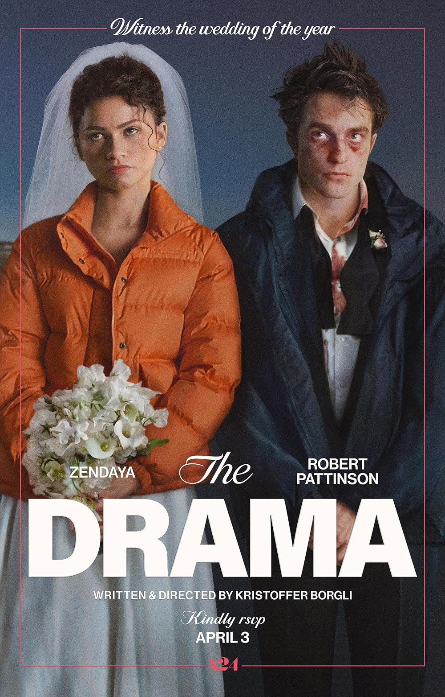

The Drama
Director: Kristoffer Borgli • Year: 2026 • Genre: Dark Comedy / Romantic Comedy / Drama • Runtime: 1h 45m
Review
It starts with one of those "tell me something I don't know about you" things. They're sitting around a table full of friends and sharing something they think is the most messed-up thing they've ever done. Their friend Rachel shares something pretty messed up, which I'll get into in the spoiler section. Everybody asks some questions, but eventually the conversation moves on. Then Emma shares her dark secret.
Is it a big thing? Yes. Do I think they overreact? Yes. Because people make mistakes. No one's perfect.
And I think that's kind of what this film plays on. What happens when you discover something about somebody you love that doesn't match the person you've created in your own head?
The movie actually sets this up earlier with the DJ Emma and Charlie have hired for their wedding. They spot her on the side of the road smoking heroin. For Charlie, that is a big no-no. Rachel agrees, and Rachel's husband Mike, who is Charlie's best friend, agrees too. They're basically like, she's got to go. But Emma feels like she needs to stick up for her.
Emma is the more forgiving, empathetic, and understanding person in that situation, whereas everybody else is quick to judge and not as forgiving. And that plays into the characters very well once Emma becomes the person everybody is judging.
This film shows how being judgmental, and being put into stressful situations, can really become almost sickening. It's that moment where you thought you loved this person, you thought you knew who they were, and then you find this one thing and suddenly it changes your whole perspective of them. It's like finding that one little loose stitch and pulling at it until the entire masterpiece is falling apart. That beautiful thing that made them who they were suddenly looks flawed.
You can see that happening with Charlie. He's starting to question everything. "Oh my God. She's not who I thought she was. She's a totally different person." He's seeing Emma through this completely new lens.
At the beginning of the movie, you see him stressing because he's trying to write this beautiful speech for his wedding to this woman that he loves. Then suddenly this secret gets dropped on him. Now he's trying to figure out what he's supposed to do with it, while Emma is trying to figure out how to make everybody understand that she's not what they suddenly think she is. On top of that, you've got the stress of the wedding.
And somehow, despite dealing with some pretty heavy material, the movie is also really funny. There were plenty of times I cracked up. It's this cutesy romantic comedy perfectly placed and embedded inside a very ethically challenging and thought-provoking film. I didn't expect that combination to work as well as it did.
The Performances
Zendaya's acting is good, and Robert Pattinson gives a solid performance. The two of them work really well together. They flow together naturally, and I enjoyed watching them work off each other. Their chemistry helps sell the relationship because you need to believe these two people actually love each other for everything that happens later to work.
I do have one issue with Zendaya visually in the film. For some reason, everybody else feels pretty natural, but she feels like she's beauty beyond everybody else, if that makes sense. She sticks out a lot because of her beauty. And I'm not saying her beauty is a bad thing. Obviously it's not.
But I think a lot of it has to do with makeup and styling. Robert Pattinson can look like the average guy in this world, whereas Zendaya doesn't really give me that same "average girl" feeling. She feels too polished compared to everybody around her. It was a little offsetting for me, but performance-wise, the two of them are really good together.
The Editing
Something else I really liked was the way they shot and cut this film. They'll cut from a funny moment into something tense. Sometimes they'll put something comedic against this incredibly uncomfortable situation, and somehow it works.
It's choppy and chaotic, but it feels chaotic in a good way because the story itself feels chaotic and stressful. There are these quick cuts and shifts in tone between comedy, romance, tension, and drama. Instead of feeling disorienting to me, it all felt like it belonged.
I can definitely understand why it would feel disorienting for some people. I'm not saying it's going to work for everybody. But it definitely worked for me.
SPOILERS
This is where the movie really started working for me.
During that conversation around the table, Rachel reveals her deep secret. She admits that when she was younger, she locked an autistic kid in a closet and left him in an abandoned house in the woods. She didn't tell anybody. When the kid's dad asked her about him, she basically acted like she didn't know. Eventually they had to bring in a search team, and they finally found him.
You hear that and think, man, that's terrible. Everybody questions Rachel about it, but eventually it's basically, okay, that's something horrible you did in your past.
Then we get to Emma. Emma admits that when she was younger and being bullied, she reached a point where she thought about carrying out a school shooting. She had a gun. But she never did it.
She explains to Charlie that she doesn't think she was actually obsessed with the idea of killing somebody. She was obsessed with the aesthetic of seeing it. And to me, there was something truthful about that as a character. It shows how youth, especially at those middle-school and high-school ages, can be easily influenced by things, especially when they don't feel like they're part of a social group or don't have peers who accept them.
Emma felt excluded. She was bullied. She wasn't part of the group. And she went somewhere extremely dark.
Now she's older. She's fallen in love with this guy. And this is basically the last thing about herself that she hasn't shown him. Maybe because they've been drinking wine, she's finally willing to take that risk and expose herself.
It's basically: Here I am. This is me.
And Charlie doesn't know how to accept it.
Then Rachel immediately turns against her because Rachel's cousin was paralyzed in a school shooting. And I thought this was really interesting because Rachel does what so many people do. They take their own pain and the burden they've felt and put it onto somebody else who reminds them of it.
Rachel basically goes straight into, "My family suffered from this, so you must be part of that culture and that type of lifestyle." Instead of stopping and asking: What happened? Why were you in that place? What happened to you that made you think that way?
I think it also reflects how people don't always heal from trauma. Rachel obviously has her own pain connected to what happened to her cousin, and Emma's confession brings that pain right back up.
But Emma didn't shoot Rachel's cousin. Emma didn't shoot anybody. She was a young person in an extremely dark place who thought about doing something horrible and ultimately didn't do it. That's an important distinction to me.
And that's also where friendship comes into this. I think if we're friends, we're supposed to stand with each other through it all. You're supposed to be able to come to me with anything. I don't care what it is. I'm going to try to help you, not immediately pass judgment.
I may not agree with what you're telling me. But I'm also not supposed to demoralize you and tell you you're a terrible person. I'm supposed to help you through that hard time so you can find your way, not push you away so you further lose yourself. I think this movie gives us something to reflect on there.
That's why I think the most important thing in this film is the bullying and the importance of young people feeling included. People need to feel included. If you see somebody who feels excluded and isn't part of the group, maybe we should invite them to come along. Maybe we should make that person feel like they're part of something so they don't get lost.
You never know how much of an effect simply bringing somebody into the group and making them feel included can have on that person. I think mainly in life, most people just want to feel like they belong. And this movie speaks to that.
Charlie Isn't Perfect Either
I also don't think Charlie's reaction is completely unreasonable. He's learning something enormous about the woman he's getting ready to marry. Me personally, I would've probably been like, eh, you're not that person anymore. You didn't do it. You've grown up.
But that's me now. I cant say In my younger years I would feel the same way. Its funny how our thoughts, and opinions changes after we have lived for a while and experienced things.
For Charlie's character, I can definitely understand how he gets to the place he does. Some things are more traumatic than others, and people react differently to them. He's having a hard time processing what Emma has told him while also dealing with all the stress surrounding the wedding.
Eventually that stress pushes him toward making his own mistake. Charlie almost cheats on Emma. Does that make it right? No. But me as a viewer, I'm not judging. I get it, man.
He's overwhelmed. He's questioning the person he's about to marry. He's emotionally all over the place, and he almost does something that could have seriously damaged their relationship. It doesn't make it right, but no one's perfect. And I think that's important because Charlie can't spend the entire movie looking at Emma as the flawed person without eventually having to confront his own flaws too.
Now they're both dealing with things they've done or almost done. That's a relationships. Sometimes people screw up. Sometimes they hurt each other. Sometimes they don't react the way they should. And somehow you've got to figure out whether what you've built together is worth working through it.
Stop Asking Everybody Else
Another thing I noticed is how much Charlie starts looking toward everybody else for some type of answer. It's almost like he's asking, "Is it all right that I'm okay? Is it okay that I still love her?" He's looking for some type of justification or approval from other people that it's okay for him to continue loving Emma.
You can see that with both Emma and Charlie during the wedding scenes. They're worried about, "Oh my God, what are all these people going to think?" But they're focusing on everybody else instead of themselves.
Because ultimately, at the end of the day, when you have a relationship with someone you love, you and that other individual and y'all's problems are y'all's problems. It doesn't matter what other people think or whether people approve of y'all's lifestyles or anything else. It's about you and that other individual.
And I think at the end of the film, they both finally realize that.
The Ending
I love the way they end this movie. After all that chaos, Emma and Charlie go back to something they usually do together. They role-play. And they meet each other again for the first time.
I thought that was almost the coolest way I've ever seen a movie say, "Let's just start over." Or, "We started off on the wrong foot."
Except this time, they're meeting each other after everything has been exposed. Charlie knows this part of Emma that she was afraid to show him. Emma knows how Charlie reacted to it. They've hurt each other. They've seen each other's flaws. They've had their friends giving their opinions and passing judgment. They've dealt with the wedding, which went to shit real fast, and all the pressure of wondering what everybody else is going to think.
And after all of that, they basically meet again.
It's almost like they're choosing each other again, except now they're doing it knowing more about who the other person actually is. I think it ends perfectly after all the chaos.
There's something else I like about that when you look back at Charlie trying to write that perfect wedding speech at the beginning. At first, he's trying to put into words this perfect image of the woman he loves. Then Emma tells him something that completely destroys that image of perfection.
Charlie screws up too. Everything becomes chaotic. By the end, neither one of them gets to pretend the other person is perfect anymore. And they still meet again.
I think that's a pretty damn good way of showing the emotional roller coaster of what it is to be in a relationship.
Final Thoughts
The Drama was a breath of fresh air for me. The whole idea of this being the last thing you didn't know about the person you're about to marry, and then connecting that with school shootings, bullying, trauma, judgment, forgiveness, social acceptance, friendship, and relationships was a fresh take.
And somehow they managed to put all of that inside this quirky romantic comedy. There are funny moments, uncomfortable moments, and ethically challenging moments. Underneath everything is this question of how well we actually know somebody and what happens when we discover something that completely changes the lens through which we see them.
It also has something important to say about being there for people. If somebody feels excluded, maybe bring them into the group. If your friend tells you something difficult, maybe try to understand before immediately passing judgment.
And when you're in a relationship, sometimes you've got to stop asking everybody else whether it's okay to love the person you're with and actually talk to that person.
Did the film have flaws? Sure. Zendaya sticking out visually was one of them, and I can absolutely see the editing style not working for everybody. But it worked for me.
There were times I cracked up because of this cutesy romantic comedy that was perfectly placed and embedded inside a very ethically challenging and thought-provoking film.
All in all, everything was pretty solid. I enjoyed the film, and I'd love to see more original ideas like this in movies with a great cast.
Rating
9/10
Audience Feedback
I’d love to hear your feedback and thoughts on the film. Email me at daniel@nobodycritics.com.